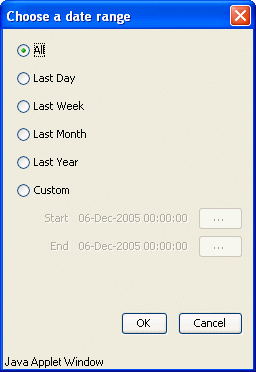

situé à côté des zones Début
et Fin de façon à afficher la
boite de dialogue permettant la saisie des données requises ;
situé à côté des zones Début
et Fin de façon à afficher la
boite de dialogue permettant la saisie des données requises ;Si les données d'un capteur, enregistrées dans un contrôleur, ont été enregistrées par le 963, ces informations peuvent être représentées sous forme de graphique.
Pour représenter les données enregistrées sous forme de graphique :
1 affichez un graphique compact ou un graphique de précision de la valeur dont les données sont à récupérer, comme indiqué dans la section correspondante de ce manuel ;
2 dans le menu Données, cliquez sur Charger les données enregistrées. La boîte de dialogue Choisir une plage de dates s'affiche :

3 cliquez sur l’option choisie pour
indiquer la plage de dates correspondant aux données à récupérer. Pour
définir une plage de dates précise, cliquez sur Choisir
et indiquez le premier et le dernier jour de la plage en cliquant sur
l’icône situé à côté des zones Début
et Fin de façon à afficher la
boite de dialogue permettant la saisie des données requises ;
4 cliquez sur OK. Le graphique s'affiche.
Vous pouvez effectuer un zoom avant ou arrière sur le graphique pour visualiser plus facilement les données. Il est possible d'afficher les données du graphique sous forme de liste de points.
Notez que cette fonction n’est disponible que pour un accès au 963 Server en mode graphique.